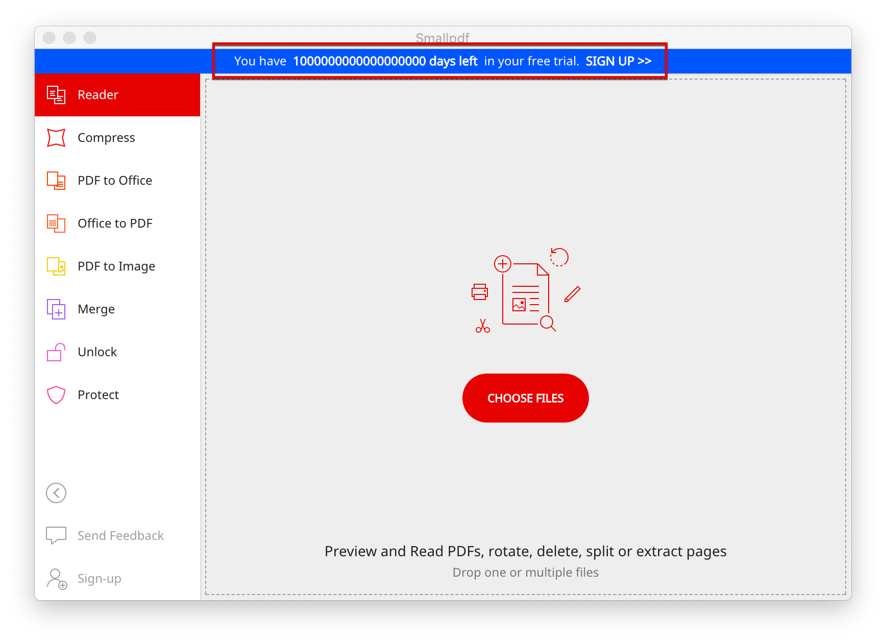

Small PDF 是一款这么多款压缩软件里面压缩率最高的神器，没有之一。除了 在线版本 之外，离线版省却了上传大文件的麻烦，不过目前有 7 天试用限制。个人多次试验后，找到了无限试用的方法。
官方试用版下载：
链接:https://pan.baidu.com/s/1-7cAlatgoMZ0jkqezj9QUQ 提取码:g74q 复制这段内容后打开百度网盘手机App，操作更方便哦
无限试用方案：

- 在 Finder 中找到
~/Library/Application Support/Smallpdf/preferences.json - 打开
preferences.json，找到以下代码："system.trial_duration_limit": 7 - 将 7 改为一个超大的数字，保存即可。